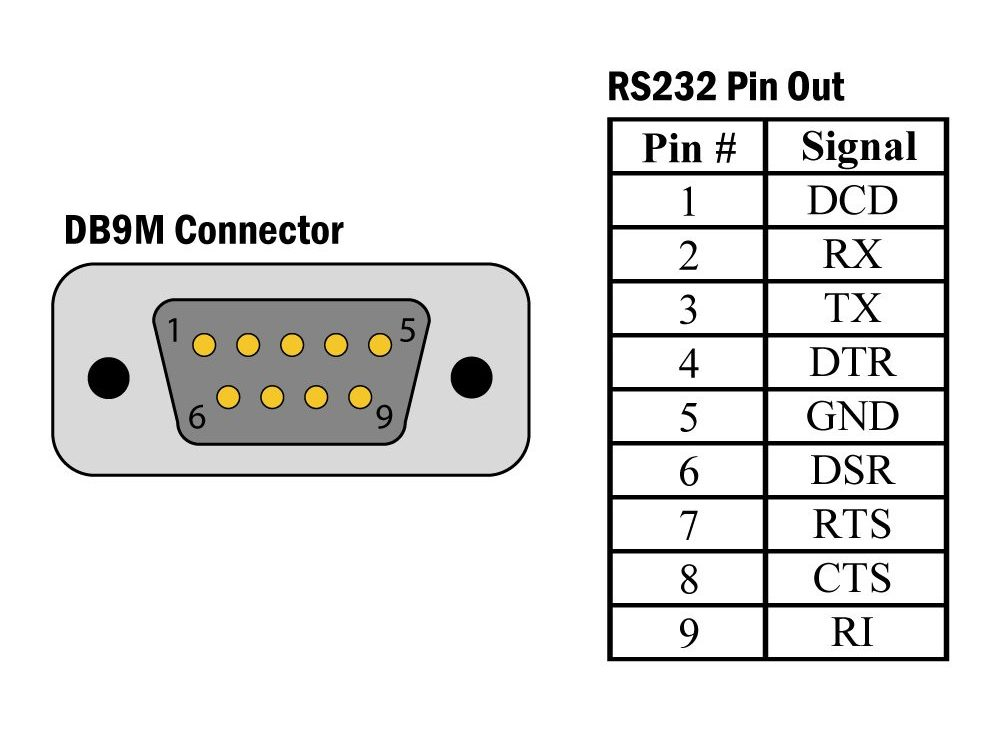
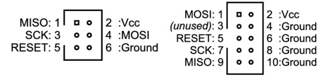
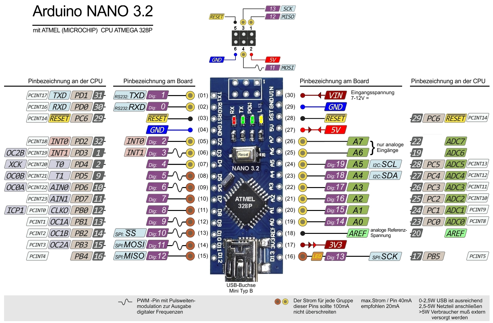
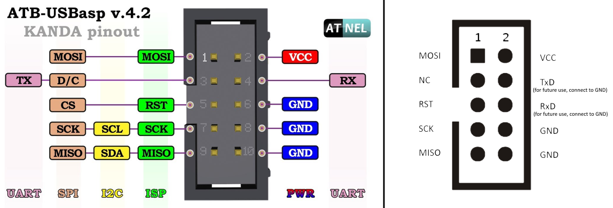

Programming, robotics, traveling
Эта заметка нацелена на изложение основных действий для перепрошивки Arduino как при помощи встроенного бутлодера, так и с помощью программатора. В первых двух разделах я коротко изложу техническую базу и особенности использования двух методов, а в третьем разделе среду разработки и утилиты необхоидмые для прошивки.
Все платы Arduino (основная линейка) построены на базе чипа Atmega с архитектурой AVR. AVR – это семейство микроконтроллеров, их прошивка, а именно запись постоянной памяти и выставление Fuse битов реализовано через ICSP порт очень похожий на SPI. Однако наиболее распространенным способом прошивки является прошивка через USB. Точнее через UART, тк на самом деле на плате разведён USB-RS232 преобразователь.
RS232 это надстройка над UART. UART содержит только пины
RX,TX. Тогда как RS232 содержит ещё и другие линии (подробнее на UART, COM-порт, RS-232, что это и как они связаны?):
Для перепрошивки через UART требуется выполнение двух условий:
Arduino Pro Mini. В этом случае вы можете попробовать перезагрузить МК с кнопки на плате Arduino (у меня это получилось раза 20го). Как альтернатива, если вы используете внешний USB-RS232 преобразователь с линией DTR. Вы можете подключить этот вывод на пин RESET Arduino. Аналогичным способом подключен встроенный преразователь на Arduino.Для начала разберемся с тем, что нужно постоянно искать – пинами на программаторе.
Есть множество различных программаторов, я использую USBASP (USBASP: USB AVR программатор для микроконтроллеров ATmega, ATtiny). Также в качестве программатора можно использовать ещё одну плату Arduino со специальной прошивкой.
Все сложность в прошивки этим способом обеспечить корректное подключение программатора к Arduino. Также обратите внимание, что лучше запитать Arduino непосредственно от программатора.
Основная проблема в том, что на большинстве программаторов ICSP-разъём содержит 10 пинов, тогда как на всех платах Arduino, и не только, он 6ти пиновый.

Для прототипирования небольших проектов, я люблю использовать Arduino Nano, ниже описание выводов:

На некоторых программаторах, в том числе на USBasp выведены также I2C, UART-линии:

Для облегчения процесса перепрошивки, может быть сделан переходник. Подробнее в статье AVR ISP Разъемы (webarchive).
Иногда при прошивке с помощью программатора возникает ошибка
avrdude: warning: cannot set sck period, please check for usbasp firmware update, при этом она может вызвана двумя причинами:
- Плохой контакт тактирующего сигнала
SCK.- Устаревшая прошивка на программаторе, подробнее как её обновить тут Прошивка USBasp.
Стандартная среда разработки Arduino IDE включает в себя:
avrdudeПо сути весь процесс прошивки заключается в запуске avrdude с разными аргументами. Мне не нравится среда Arduino IDE ввиду крайне неудобного редактора при открытии нескольких файлов.
Я использую в качество основного редактора кода VSCode, для него есть замечательный плагин Platformio, который позволяет производить сборку, а также прошивку устройств через встроенный загрузчик. Однако для перепрошивки, а также для работы с последовательным интерфейсом я предпочитаю использовать напрямую утилиты avrdude и screen. Для этого я добавляю в репозиторий примерно следующий Makefile:
all: upload
upload:
platformio run --target upload
clean:
platformio run --target clean
build:
platformio run
list:
ls -l /dev/tty.*
monitor:
screen /dev/tty.usbserial-AH05WAKX 115200
usbasp:
avrdude -c usbasp -p m328p -P usb -U flash:w:.pio/build/ATmega328P/firmware.hex:i -FD
direct:
avrdude -c arduino -p m328p -U flash:w:.pio/build/ATmega328P/firmware.hex:i -P /dev/tty.usbserial-AH05WAKX
info:
avrdude -c usbasp -p m328p -P usb -v
setup:
brew install avrdude screen
Адрес последовательного интерфейса может отличаться, также цель
setupиспользует пакетный менеджерbrewдля установки зависимостей на macOS.
Библиотеки я предпочитаю лично контролировать включением их в репозиторий, для этого в проекте Platformio необходимо создать папку lib.
Пожалуй, это основные лайфхаки которые я использую для прошивки Arduino. Я умышленно упросил и недосказал некоторые моменты, возможно я допишу это когда-нибудь.